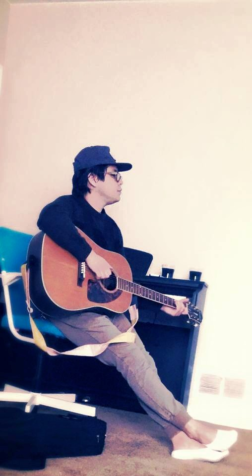

About Me
Hello! Glad to have you here. My name is Andy Chow and this is my portfolio! I am new to the wed dev world and am excited to start on this adventure. Little by little I will add to my portfolio and be able to showcase my improvement and successes. Stay tuned.
I call Pacifica California home. It is a coastal town close to San Francisco. I currently live in Salt Lake City Utah. In April 2016 I graduated from Brigham Young University with a degree in Public Health and a minor in Business Management. I currently work for the University of Utah Hospital. I look forward to furthering my career with a skill in computer programming and web development. My goal is to work for the health world helping out in informatics.
Connect With Me